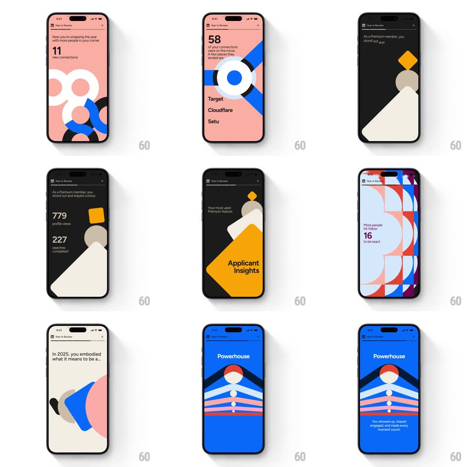

Media
Frame-by-frame

Rebuild this animation 1:1: a LinkedIn Year in Review story - auto-playing full-screen scenes on bold color fields where abstract geometric shapes animate while big-type stats reveal in stagger.

Rebuild this animation 1:1: a LinkedIn Year in Review story - auto-playing full-screen scenes on bold color fields where abstract geometric shapes animate while big-type stats reveal in stagger. ## Integration A timed story sequence of full-screen scenes; each scene is a color field + animated vector shapes + a staggered text reveal; auto-advances on a timer. ## Scene - Scene 1 (salmon/pink field): bold black geometric arcs and circles animate; headline "11 new connections" in big type. - Scene 2: "58 of your connections were on the move. A few places they landed are: Target, Cloudflare, Setu" with a blue geometric flag shape. - Scene 3 (dark field): "As a Premium member, you stood out and stayed curious. 779 profile views" with yellow/orange geometric shapes sliding across. - Scene 4: "Your most..." headline with stacked geometric shapes. - Scene 5 (yellow field): "Applicant Insights". - Scene 6 (blue field): "Powerhouse - You showed up, stayed engaged, and made every moment count" with a striped geometric person illustration. ## Motion spec Pattern: auto-playing story with geometric shape animations and staggered text reveals. - Scene duration: ~4s each, with hard cuts or quick crossfades (200ms) between scenes. - Shapes: arcs rotate into place (~600ms, ease-out); circles scale from 0 with a spring (overshoot ~1.05); stripes slide in horizontally (~500ms, staggered 60ms per stripe). - Text: the headline reveals first (translateY 24px → 0 + fade, 400ms), the stat number pops at +200ms, supporting copy at +400ms. - The geometric flag (scene 2) pulses subtly while the company names stagger in one by one (120ms apart). - The striped person (scene 6) animates its stripes in from bottom to top. ## Calibration - Scene dwell: 4s; transitions 200ms. - Shape entrances: 500-600ms ease-out/spring; stripe stagger 60ms; name stagger 120ms. - Text stagger: headline 0ms, stat +200ms, body +400ms. ## Reduced motion Static scenes: shapes in final positions, all text visible; scenes advance on tap only. ## Don't miss - Each scene keeps ONE bold field color with high-contrast geometric shapes on top. - The numbers are the hero - big type, revealed after the headline. - Auto-advance pacing matches a social story (~4s per scene).